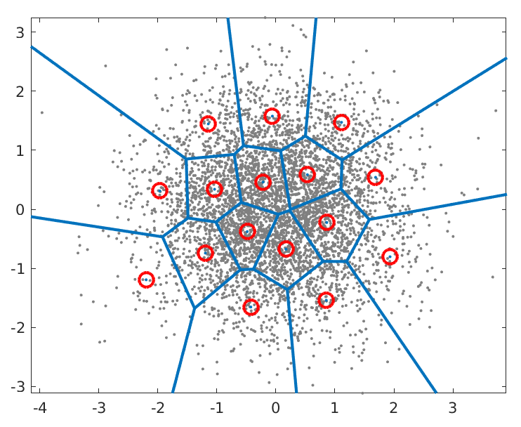

Multimodal Risk Analysis of Cancer Patients
In progress
Context
Physicians must tread with caution when treating patients with cancer. Several treatments, such as chemotherapy, harm the patient just about as much as it helps. Physicians must perform rigorous prognostication, the task of predicting the progression of a disease, when working with patients with cancer. Due to the complexity and diverse aspects of prognostication, multimodal approaches that combine histology and omics data, such as transcriptomics, are particularly promising. Transcriptomics is often delineated through bulk RNA sequencing, which provides insights into gene expression. Taking this a step further, protein pathways, a series of interconnected steps that describe how proteins are synthesized, modified, transported, and degraded within a cell, helps scientists comprehend how cells function and how disruptions can lead to disease.
Proposed Solution
Following many prior research papers, we use whole-slide images (WSI) and genomic sequences as features to predict the risk of patients with cancer.  One common issue with transcriptomics, especially protein pathways, is their immense size. Not only this, but health datasets, especially genomic, are often limited in quantity. We thus face the curse of dimensionality.
How do we reduce the size of these protein pathways to use as inputs to our GNNs? I propose we use Vector-Quantized VAE. Variational Auto-Encoders are adept at feature reduction because, unlike PCA and similar techniques, VAE learns a probabalistic continuous latent space and not just single points. However, biological data is often sparse, graphical, and discrete. The nature of the VQ-VAE's latent space, which consists of a finite "codebook" of representative vectors, aligns much better with this biological reality. Note that this is not my image, but it represents how VQ-VAE works.
Another concern is how to concatenate WSI features with transcriptomics. First thing that comes to mind is cross attention. Cross attention is crucial in state-of-the-art multimodal models. Stay tuned to find out how we query, key, and value our data :)